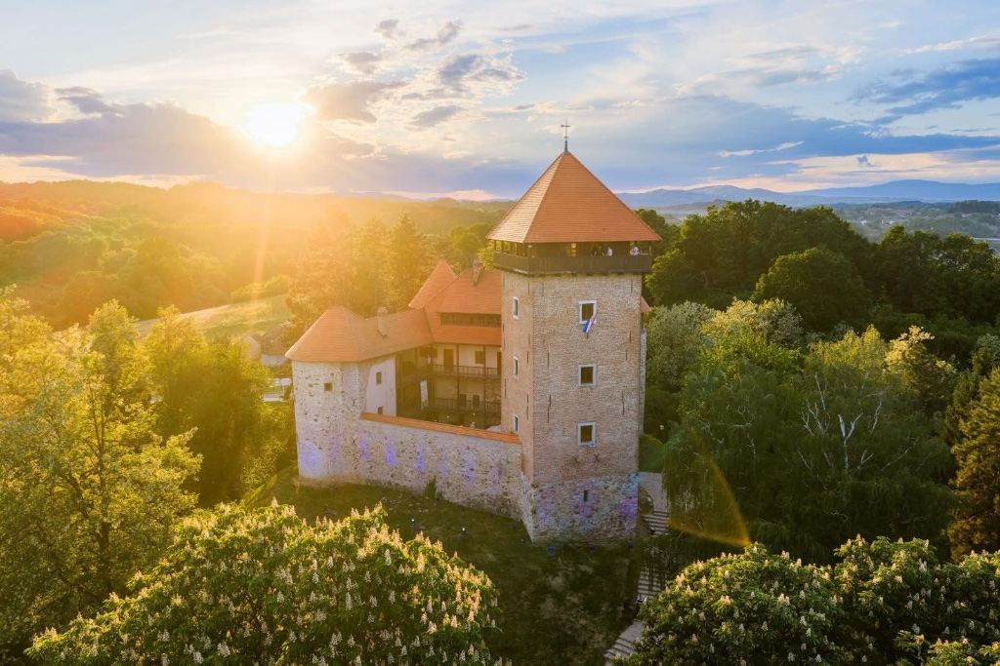

Mrežnica, Korana i Kupa
Kupališta, šetnje, vožnje kajakom i mjesta za opušteni ručak uz rijeku.

Doživljaji
Od jutarnje kave uz Dobru do izleta kroz zelenu Karlovačku županiju.
Rijeka Dobra
Do Dobre vodi makadamski put dug približno 100 metara. Uređeno mjesto sa stolovima, klupama i odbojkaškim igralištem udaljeno je oko 300 metara.
Na mirnijim dijelovima moguće je kupanje, SUP i kajak. Riječni uvjeti mogu se mijenjati, zato gosti trebaju pratiti lokalne upute i izbjegavati nesigurnu prečicu ispod kuće.
Noćno kupanje nije dopušteno. Tijekom ljetnog režima hidroelektrane od 15. lipnja do 15. rujna potrebno je posebno pratiti razinu vode i zvučne signale.

Za jednodnevni izlet
Kupališta, šetnje, vožnje kajakom i mjesta za opušteni ručak uz rijeku.
Stari grad i kameni most, odličan izbor za kratak izlet i fotografiranje.
Stari grad Dubovac, Aquatika i povijesna Zvijezda udaljeni su oko 20 minuta.
Mirne ceste, šume, lokalna hrana i manje poznata mjesta bez turističke gužve.

Sporiji ritam
Neki od najboljih dana u Casa Huerti nemaju plan: kava u vrtu, stolni tenis, peka, popodnevni jacuzzi i večer uz kamin.
Za preporuke prilagođene vremenu i sezoni slobodno nam se javite prije dolaska. Rado ćemo predložiti izlet, kupalište ili mjesto za ručak.
Odmor po vašoj mjeri
U Casa Huerti ne morate birati. Oboje je dovoljno blizu.